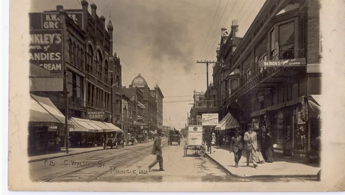

![A wide, cinematic 1920s-themed collage styled like aged newspaper print, centered on bold Art Deco gold lettering reading "Dry Laws, Wet Pictures" with the subtitle "Prohibition as Performance." On the left, muted sepia scenes depict temperance imagery: a stern reformer beside propaganda posters and a distressed family, all lit softly to evoke moral seriousness. Across the top, Prohibition agents dramatically smash wooden barrels while photographers capture the staged action. On the right, the tone shifts to warm, golden light inside a lively speakeasy, where flappers, musicians, and well-dressed patrons drink and socialize. At the bottom, a sharply dressed gangster faces forward confidently, contrasted with a mugshot-style portrait of the same figure, emphasizing the duality of glamour and criminality. Layered throughout are newspaper clippings, camera flashes, and a city skyline, reinforcing themes of spectacle, media, and the tension between law and lived reality.](images/ch24_lecture2_title.jpg)
Three Questions for This Lecture
- Why did Prohibition fail so visibly — not merely why it failed, but why the failure was so public and so thoroughly documented?
- How did photography reshape public attitudes toward law and authority?
- What did Prohibition reveal about class, power, and selective enforcement — and what did ordinary Americans learn from watching it?
Section I
Before continuing, review the background lecture on the temperance movement and the origins of Prohibition.
Why the 18th Amendment Passed
- Culmination of nearly a century of Protestant temperance organizing — not a sudden invention
- WCTU (1874) and Anti-Saloon League (1893) built the political machine
- By 1919, 33 states already had some form of prohibition legislation
- Reformers genuinely believed moral legislation could change behavior at scale

Frances Willard, WCTU President (1879–98) · ca. 1890 · Public Domain · Wikimedia Commons
Reform Photography Was Already a Weapon
- Temperance movement understood that images were persuasive arguments, not neutral documents
- Visual vocabulary: the suffering family, the destitute drunkard, the respectable woman demanding justice
- Reform photography constructed a moral case for the law before the law passed

Temperance reform broadside · ca. 1910 · Public Domain · Wikimedia Commons
⏸ Pause & Reflect
Reform photographs were designed to produce an emotional argument. In what ways is an enforcement photograph designed to do the same thing — just for a different purpose and a different audience?
Section II
A law passed by rural Protestant America — enforced in cities that had no intention of complying
The Gap Between Law and Reality
- 18th Amendment + Volstead Act banned manufacture, sale, and transport of alcohol
- Prohibition Bureau created within Treasury — chronically underfunded
- Tens of thousands of agents; tens of millions of drinkers
- Speakeasies multiplied — New York had an estimated 30,000+ by the mid-1920s
- Bootlegging became an organized industry almost overnight
- Enforcement was underfunded and systematically corrupted
Two Americas, One Law
- Large immigrant populations for whom wine and beer were cultural staples
- Democratic political machines resistant to federal enforcement
- Speakeasy culture openly visible; enforcement openly negotiable
- Protestant evangelical communities where the law reflected genuine moral consensus
- Compliance considerably higher — but not absolute
- Moonshining persistent in rural South and Appalachia
⏸ Pause & Reflect
Why would an immigrant community's newspaper cover a Prohibition-era raid differently than a mainstream metropolitan paper?
- It would use fewer photographs
- It would frame the raid as enforcement against its own community rather than evidence that the law was working
- It had no interest in Prohibition politics
- It would praise the Bureau agents more warmly
Section III
How a law that could not be enforced learned to perform enforcement for the camera
The Staged Raid
- Prohibition Bureau agents routinely tipped off reporters and photographers before raids
- Confiscated barrels and bottles arranged for maximum visual effect; agents posed with axes raised
- Front-page photographs communicated official seriousness — without significantly disrupting the flow of illegal alcohol
- Historian Michael Lerner: New York enforcement organized around managing appearances, not achieving compliance
The Camera Constitutes the Performance
- Agents arranging barrels weren't deceiving the camera — they were producing evidence of their own legitimacy for their superiors and patrons
- Newspapers weren't reporting on events — they were participants in a collaborative performance
- The audience: the general public, being asked to believe the fiction that Prohibition was being enforced
- The staging was understood by everyone involved — the fiction was collaborative
Modeling the Three-Paragraph Analysis
Source & Context → Visual Analysis → Argument — and why Paragraph 3 is always the longest
⏸ Pause & Reflect
If both the photographers and the agents knew the raid was staged for the camera — and if the newspapers knew it too — what kept the performance working for as long as it did?
Section IV
How Prohibition turned bootleggers into public figures — and what that required from photography
The Gangster as Public Figure
- Bootleggers understood that public visibility was a form of power
- Al Capone gave interviews, held press conferences, attended sporting events openly
- His photographs borrowed visual grammar from entertainment celebrity — full face to camera, expensive suit, confident expression
- The press obliged: found him useful, quotable, visually compelling

Al Capone · Press photograph · 1930 · Public Domain · Wikimedia Commons
The Press Portrait vs. The Booking Photo
- Same person, radically different visual treatment
- Press portrait: confident, well-dressed, the posture of a successful man
- Booking photograph: institutional framing — identity, not persona
- The gap between them is not accidental — it is the work of deliberate visual management

Al Capone · CPD Booking Photograph · Public Domain · Wikimedia Commons
From Headline to Hollywood

Little Caesar · Warner Bros., 1931 · Public Domain · Wikimedia Commons

The Public Enemy · Warner Bros., 1931 · Public Domain · Wikimedia Commons
Celebrity Was Not Equally Available
- Press portraits; celebrity profiles; sympathetic or admiring coverage
- Wealth and style visible; power openly discussed
- Fiction borrowed directly into Hollywood — Little Caesar, The Public Enemy (both 1931)
- Numbers runners, policy bankers, Harlem and South Side proprietors — same economy, comparable local stature
- Mainstream press: booking photographs, crime records — not celebrity profiles
- Gangster celebrity culture was selectively available along racial lines
⏸ Pause & Reflect
Capone's press photographs borrowed the visual grammar of entertainment celebrity on purpose. What was he actually communicating to his audience — and why was the press willing to carry that message?
Section V
Who got raided — and who got left alone
The Pattern Was Consistent and Visible
- Working-class immigrant neighborhoods — Italian, Irish, Polish, Jewish families
- Black-owned establishments in northern cities
- Small operators without political protection
- Elite midtown Manhattan clubs
- Private Park Avenue homes
- Country clubs where the decade's wealthy drank bootleg Scotch openly
Photography Gave the Gap a Face
- A photograph of tenement residents arrested for home winemaking alongside a society column reporting a champagne dinner — no editorial commentary needed
- The contrast was self-explanatory, and more politically effective than statistics or moral argument
- Immigrant communities read their own ethnic newspapers — coverage of raids on their neighborhoods made the class and race argument explicit
- Michael Lerner: Prohibition taught urban Americans that the law was a weapon wielded selectively against the poor and the immigrant
Why Immigrant Communities Read It Differently
- Italian, Irish, Polish, Jewish immigrants came from cultures where wine and beer were integrated into daily life — not morally suspect
- Prohibition felt like rural Protestant America imposing its moral framework on Catholic and Jewish urban communities
- Enforcement confirmed this reading: their neighborhoods hardest hit, their establishments most visible in the photographic record
- The ethnic press provided weekly visual evidence that their interpretation was correct
⏸ Pause & Reflect
Photography did not create the class and racial politics of Prohibition enforcement. What did it do?
- It created the illusion that enforcement was fair
- It made selective enforcement visible, specific, and nationally distributed
- It caused the Bureau to change its targeting practices
- It documented enforcement impartially across all class lines
Synthesis
The Middletown Evidence
The Lynds in Muncie, Indiana
- Robert and Helen Lynd spent 18 months in Muncie, Indiana (1924–25) — an ordinary midwestern city, neither coastal metropolis nor rural backwater
- Middletown (1929): the closest thing American social science produced to a real-time account of how the 1920s felt from the inside
- Finding: Prohibition had not eliminated drinking — it had driven it underground and associated it with a glamour of transgression

Muncie, Indiana · The community the Lynds called Middletown · ca. 1920s
Common Knowledge, Not Secret Knowledge
- Muncie residents knew enforcement was selective — some establishments operated openly while others were raided
- They knew targeting decisions had nothing to do with the law's actual provisions
- This was common knowledge circulated through the same daily newspapers that published the raid photographs and society columns
- The Lynds documented the cumulative political effect: if the police could be bought, if the law could be selectively applied — what did law actually mean?
A Corrosive Ambiguity
- Cynicism could fuel demand for honest enforcement and equal application of the law
- Accountability for corruption; reform politics
- Or: law is merely a tool of whoever holds power
- Compliance is for suckers; the rational response is to work around the system
⏸ Pause & Reflect
The Middletown evidence shows that even ordinary people in an unremarkable midwestern city were drawing political conclusions from Prohibition photography. What does that suggest about the power of images to shape attitudes toward law — before and after Prohibition?
📋 Assignment Bridge
Four categories. Three paragraphs. One argument about law and authority.
Category Map — Where Lecture Meets Image
Section I. Reform photographs constructed the moral argument before the law passed. Ask: was this image documentary or advocacy — and is that distinction as clear as it first appears?
Section IV. Press portrait vs. booking photograph. Ask: how does the visual treatment ask you to feel about this person? Is celebrity treatment equally available across race?
Section II. Speakeasy interiors, cocktail culture, women in nightlife. Ask: who is present, and what does their presence say about who had access to the culture of violation?
Section V. What the image shows and what it omits. Ask: who is being targeted? What community is depicted, and how? What does the publication context assume?
The Three Paragraphs — What Each Does
Who made it. When. In what publication or original context. One sentence: what was this image produced to accomplish for its original audience.
Describe this photograph precisely — not Prohibition in general. What is arranged or staged? What would you expect to see that the frame has excluded?
Connect to the lecture's central claim: Prohibition photography was performance. What argument is this image making about law, authority, or the social order? Who benefits from that argument being believed?
Where to Search + The Famous-Image Test
- Chronicling America — loc.gov · images in original newspaper context
- LOC Prints & Photographs — loc.gov/pictures · search "Prohibition"
- National Archives — archives.gov · search "Prohibition Bureau"
- NYPL Digital Collections — digitalcollections.nypl.org · strong for nightlife
Before committing to a photograph: does it appear in your textbook, in a Wikipedia article, or in the first page of Google Images results for "Prohibition"?
If yes — find a different one.
The most reproduced images produce the most predictable analysis. The archives above contain thousands of less-familiar photographs that reward close looking.
The Lecture's Central Claim
Ready to Start
Full instructions, category descriptions, archive guidance, and the Famous-Image Test
Open on Canvas →The Largest Still in Captivity (1922) — all three paragraphs modeled in full, with annotation
Open Sample →